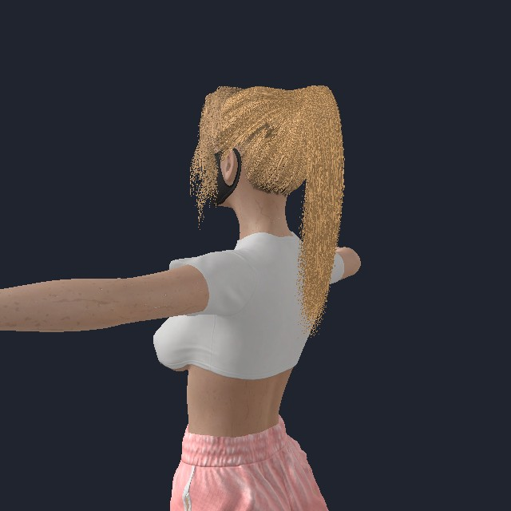
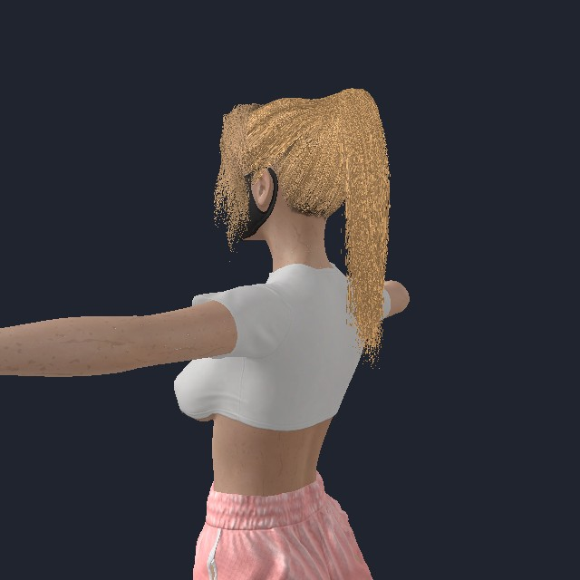
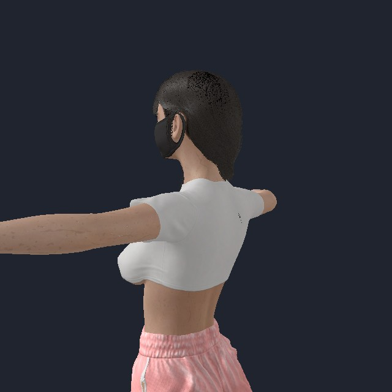
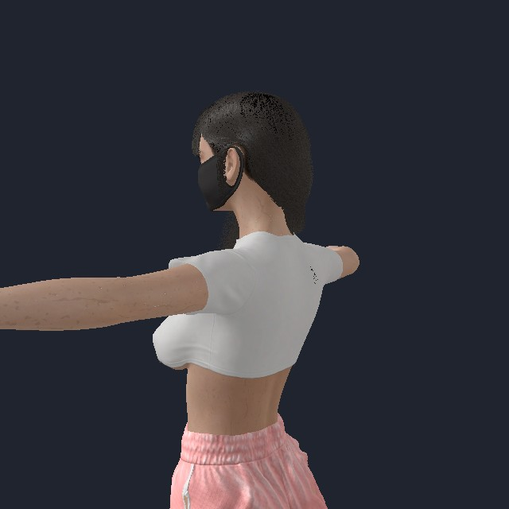

长发与马尾：VaM 原生动态对照
本轮结论
之前的 VaM 对照关闭了头发模拟，只能验证静态还原。本轮实际运行了原版头发求解器；同一 QiMeng-b 人物分别加载既有长发与马尾源预设，保留源头发约束参数，输出粒子轨迹与三个视角。
本报告建立动态源基线并定位转换差异；尚未声称 UE 与 VaM 动态等价或已经完成新的 UE 求解器修复。 历史 UE 录像动作不同，只能参考，不能与本次数据计算同动作误差。
实际视频
0–8 秒静置沉降，8–16 秒头部摆动，16–24 秒停止恢复。身体采用运动学骨骼驱动、头发物理开启，非全身自由动力学。原版服装保留，但没有据此宣称衣服参与头发碰撞。启动最初帧包含求解器重置，不能当作沉降后的外形。
高马尾：原版 VaM 物理运行


长发：原版 VaM 物理运行


粒子运动证据
每帧用实际头骨世界矩阵的逆变换移除头部刚体运动；单位 cm。位移是该阶段相对第一帧的最大发梢位移，非画面像素。最后速度是阶段末五个采样间隔的中位数。GPU 读回会干扰帧耗时，本轮不作性能结论。
| 发块 | 源导线数 | 转头最大位移 cm | 恢复阶段最大位移 cm | 最终速度 cm/s |
|---|---|---|---|---|
| Swift Ponytail Hairline | 60 | 1.09 | 0.00 | 0.0000 |
| Swift Ponytail | 807 | 16.47 | 14.24 | 0.0010 |
| Swift Bangs 3 A | 81 | 7.94 | 5.27 | 0.0002 |
| long9 base | 572 | 22.27 | 11.62 | 0.0002 |
| long9 side | 104 | 12.31 | 3.47 | 0.0002 |
| long9 bang | 19 | 1.73 | 1.33 | 0.0005 |
| long9 extra | 6 | 0.99 | 0.34 | 0.0005 |
| long9 extra2 | 15 | 1.90 | 1.40 | 0.0002 |
VaM 如何维持发型并允许运动
本机 Assembly-CSharp 的 HairPhysicsWorld.DispatchPhysicsImpl 调用链确认：启动阶段先重置到造型支撑；随后迭代积分、PointJoints、DistanceJoints、可选 CompressionJoints、可选 NearbyDistanceJoints、SplineJoints，最后处理球/连接球/平面碰撞及点支撑。方法调度证据不能替代 GPU 内核数学公式证明。
| 机制 | 作用及当前 UE 差异 |
|---|---|
| 逐点 rigidity | 根端固定，绘制刚性或 root/main/tip 曲线控制对原造型的支撑；不是一个全局弯曲刚度 |
| Distance / Compression / Spline | 保持长度、压缩和沿发丝的形状；当前 UE 用 Rod 替代，未逐项等价映射 |
| NearbyDistanceJoints | 预先建立的发束连接；不同于运行时自碰撞。当前 UE 最多保留每点两条连接，不能视作完整等价 |
| Weight | VaM 在本机调度中将其用于积分时间尺度；不能直接把同一个数作为 UE 的质量参数 |
| 碰撞 | 源运行时使用球与连接球等代理；UE 使用 PhysicsAsset。需核对真实覆盖、更新时序及碰撞后造型投影 |
当前 UE 应重点验证的差异
VamHairSourceConstraints.h 将点支撑折算为按 60Hz 和 UE 迭代次数重复的回形衰减；源与目标迭代语义不同，不能靠相同数值证明等价。
VamHairStyleSolver.h 还追加了回形正则和固定最大位移：loose 为 10 cm、supported 为 0.15 cm、compact 为 0.25 cm。当前马尾主体属于 loose，发际部分为 supported。VaM 实测自由尾部能出现超过 10 cm 的运动，但两边所用位移定义不同，因此这是优先消融项，尚非单项根因证明。
接下来用实际矩阵统一 UE 驱动，按顺序消融额外回形 / 位移上限、逐点支撑折算、发束连接；保持原始资源和碰撞开关不变。优先让束根保持造型、尾部自由弯曲，再处理长发与肩背接触；保留关闭头发自碰撞的要求。
参考与数据边界
- Epic Hair Physics Overview：UE 使用 GPU Niagara / XPBD，导线驱动渲染发丝，PhysicsAsset 代理处理身体碰撞。
- Epic Groom Physics Settings：弯曲/拉伸、空气阻力、碰撞、局部模拟参数。
- VaM 发型作者指南：复杂发型按发块组织，绘制刚性决定离开造型模式后的形状。属于作者经验指南，非完整求解器规范。
本次源调用链来自本机程序集只读检查；原插件在每次采样后恢复并校验哈希。身份见 identities.json；原始粒子、实际矩阵和时间戳路径在其中。历史静态证据保留。